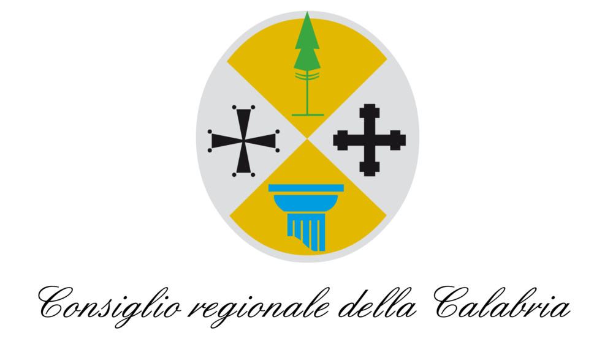

26
27
28
Giugno 2026
Piazza Sacri Cuori, Localita Gidora, Luzzi
Cosenza Super Street Food
Il piu' grande festival di street food della provincia di Cosenza. Tre serate di piazza, street chef, birra, musica live e un'atmosfera costruita per farsi ricordare.
Programma
Tre sere di musica
Un programma diverso ogni giorno
per tenere alta l'energia.
Ven 26Sax ID, Liga n' Roll e Romeo Renne
Sab 27Paris-Buenos Aires, Unconventional Drea e Febbre Italiana
Dom 28Alessandra Latino e I Ricci di Mare
Mappa evento
Esplora la mappa
Trova il tuo street chef preferito in un attimo
Esplora la mappa dell'evento, scopri dove si trovano gli stand e scegli cosa gustare senza perderti neanche un momento della festa.
Come raggiungerci
Consulta la mappa stradale e apri il percorso verso Piazza Sacri Cuori, Localita Gidora, Luzzi.
Condividi il tuo momento
Scatta la tua foto preferita del festival e inviala allo staff: raccogliamo i momenti piu belli vissuti in piazza.

Supportano con patrocinio l'evento

